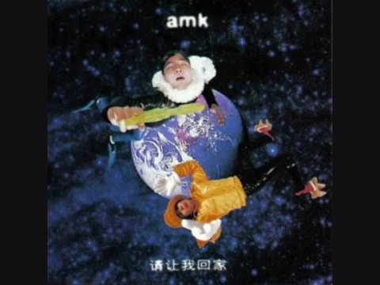
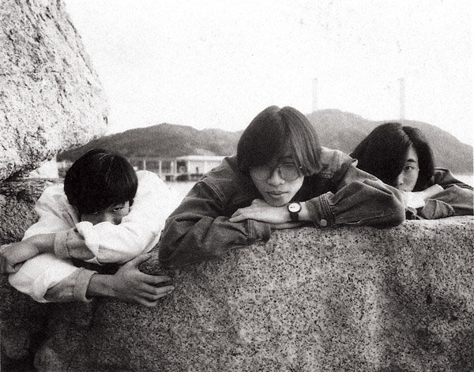
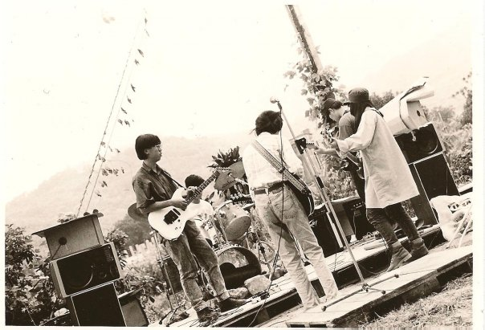
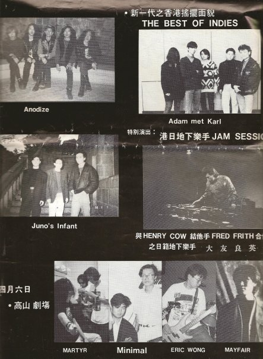

作为半个金属党，相对于 solo，我其实更爱 riff。本来想憋一期《劲歌金 riff》出来的，想想这似乎更像是一个长期工作，所以倒不如试试一首一首来推介。
当然 riff 并不是金属党专用，同时为了装逼及反装逼，这第一集我觉得首当其冲的就是香港元老独立乐队 AMK 的这首《请让我回家》。

和我年纪相仿或者比我更小一点的乐迷里，应该有很多都是听了 My Little Airport 林阿P 的介绍而知道 AMK 这个名字的。我倒已经忘记自己是不是了，但《请让我回家》的第一句「多谢你」后接踵而来全程高能的 riff，却是令我记到现在，以至于《劲歌金 riff》这个主题的灵感来源其实就是它。

「多么八十年代的照片」

AMK 全称「Adam met Karl」— 寓意为「亚当·斯密遇上卡尔·马克思」— 光名字就足以把各大文青震的一逼，不少大一新生更是闻风丧胆。

对了，如果你有听王菲，《一人分饰两角》就是 AMK 作的曲。其它的资料网上应该都能找到，我就不重复了，反正我不是考究派。前几年在香港买了他们的 20 周年纪念良心 boxset《History》，但后来发现其实他们的很多歌都过于晦涩和实验，我听了一两次就放弃了。你知啦，那个年代的香港文化人，很多心思的。